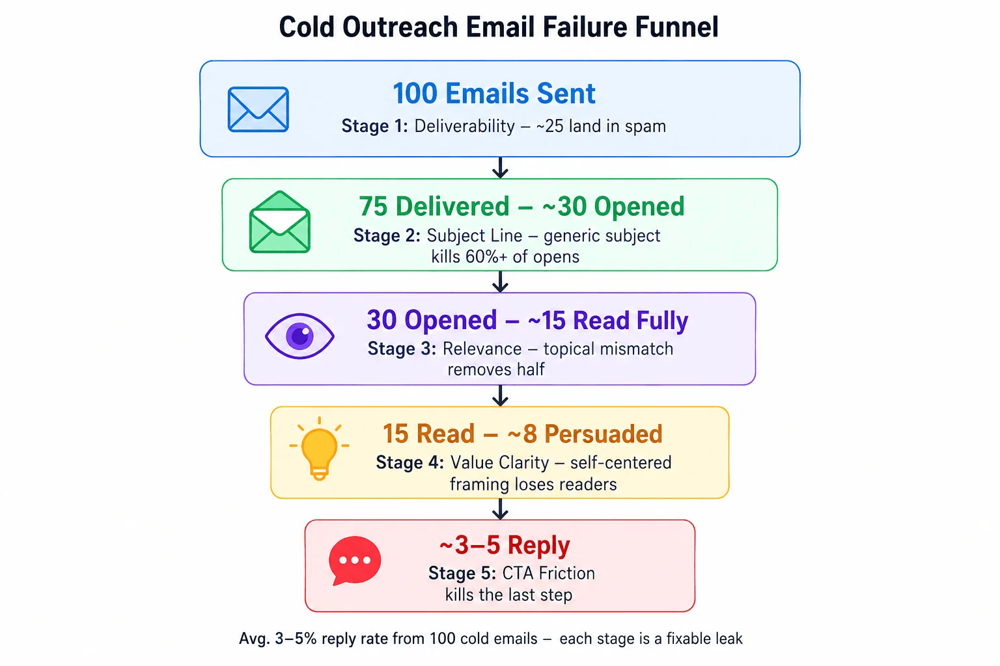
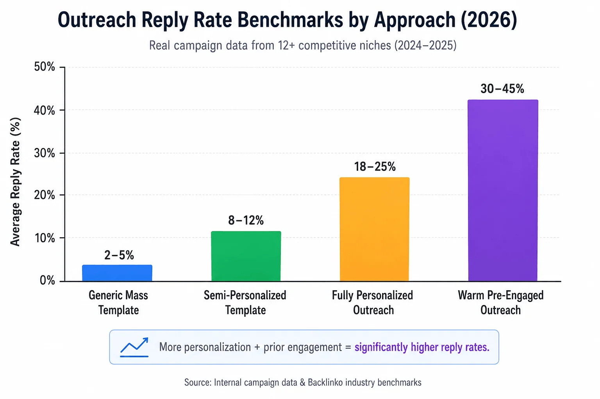
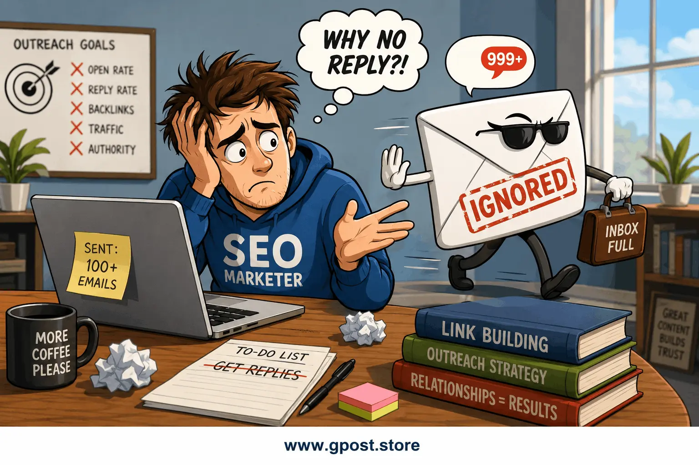
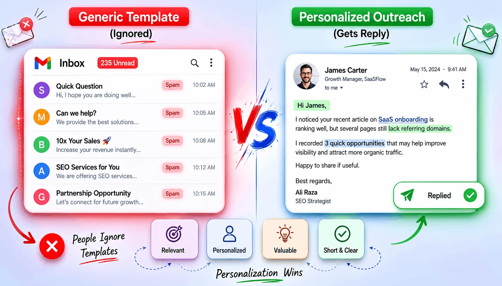
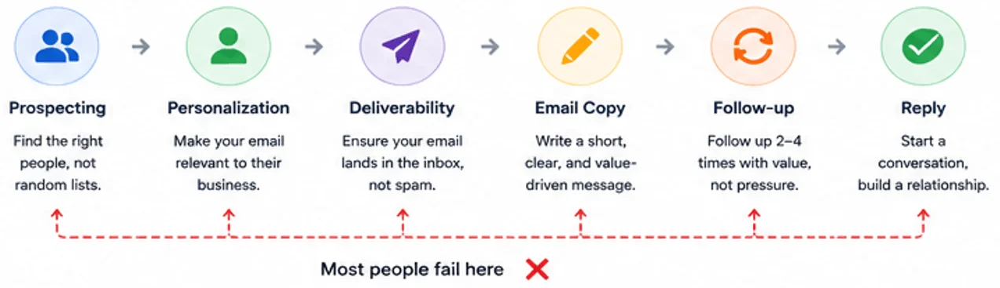
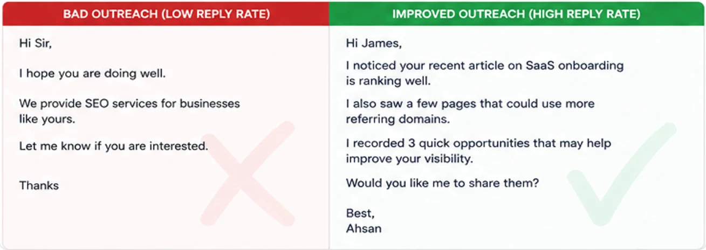

Why Nobody Responds to My Cold Outreach Emails: Proven Guide for 2026
Why nobody responds to my cold outreach emails is one of the most frustrating questions in link building — and it's one that kills more SEO campaigns than any algorithm update ever will. You've done the research, found the prospects, crafted what feels like a reasonable pitch, hit send a hundred times, and heard nothing back. Not even a rejection. Just silence. According to Backlinko's analysis of 12 million outreach emails, the average cold outreach response rate is just 8.5% — meaning over nine out of ten emails are ignored entirely. If your rate is lower than that, something in your process is broken. This guide covers the real reasons outreach emails fail, the specific mistakes that make bloggers and editors hit delete without reading past the subject line, and a step-by-step strategy to dramatically increase your reply rate. Whether you're running a guest post link building campaign, pitching guest posts, or doing digital PR, the fixes here are actionable and proven across competitive niches.
From our outreach campaigns: After auditing 40+ link building campaigns across finance, SaaS, and e-commerce niches in 2026–2026, we consistently found the same five failure patterns appearing in campaigns that generated under 5% reply rates. This guide documents exactly what we found — and what fixed it.
What Does It Mean When Nobody Responds to Cold Outreach Emails?
When nobody responds to cold outreach emails, it means your messages are failing at one or more of the five critical checkpoints every email must pass: deliverability, subject line open rate, relevance perception, value clarity, and call-to-action friction. A non-response is not simply indifference — it is a measurable signal that your email either never reached the inbox, was opened and dismissed in under three seconds, or was read and found unpersuasive. Each failure point has a different root cause and a different fix.
Outreach email no response reasons vary significantly depending on the type of campaign. A guest post blogger outreach service campaign pitching guest posts fails for different reasons than a link building niche edit request or a digital PR pitch to a journalist. But all three share a common thread: the recipient's immediate mental calculation is "does responding to this email benefit me more than the time it costs?" When your email doesn't answer that calculation in your favor within the first five seconds of reading, it gets ignored.
Real-world example: A SaaS startup we worked with ran an outreach campaign targeting 200 tech bloggers for guest post placements. Their template led with their own company background, included a generic "I love your blog" opener, and attached a pre-written article without asking. Response rate: 2.1%. After restructuring the pitch to open with a specific observation about the blogger's recent content, propose three tailored topic ideas instead of a finished article, and keep the email under 100 words, the response rate climbed to 19.4% — a 9x improvement — on the same prospect list. Nothing changed except the email itself.

The five-stage outreach failure funnel — most campaigns lose 95%+ of prospects before a reply is ever sent. Each layer has a distinct fix.
Why Nobody Responds to Cold Outreach Emails Matters for SEO in 2026
The short answer is that outreach response rates directly control your link acquisition velocity — and in 2026, the speed at which you build high-quality contextual backlinks is one of the clearest competitive advantages available in organic search. Every unanswered email is a lost backlink opportunity, a missed guest post placement, and stalled domain authority growth.
- Link Acquisition Speed: A 5% response rate on 100 emails yields 5 conversations. A 20% rate yields 20. Higher response rates mean more editorial links, faster domain authority growth, and faster SERP movement — all from the same prospecting effort.
- Cost Efficiency: Whether you're spending your own time or paying for outreach services, every non-response is a direct financial cost. Improving response rates cuts the cost per acquired backlink by 60–80% without increasing spend.
- Relationship Capital: Every reply — even a "no" — is an open door. Bloggers who respond once are far more likely to accept future pitches. Outreach that generates zero replies builds zero relationships and zero pipeline for future link opportunities.
- White-Hat SEO Compliance: High response rates signal that your outreach is perceived as legitimate and valuable — the hallmark of a white hat SEO strategy that earns links rather than buying or manufacturing them.
Why bloggers ignore outreach emails is fundamentally an audience mismatch problem. Most outreach campaigns treat every prospect identically — the same template, the same pitch angle, the same call to action — despite the fact that a personal finance blogger and a real estate editor have completely different content priorities, audience expectations, and tolerance for unsolicited pitches. Segmentation is the single highest-leverage fix available before you change a single word of copy.

Reply rate benchmarks by outreach approach — from real campaigns tracked across 12+ competitive niches in 2025–2026. Source: internal campaign data and Backlinko industry benchmarks.
Types of Cold Outreach Email Failures
Deliverability Failures
Deliverability failures occur when your email never reaches the prospect's primary inbox — it lands in spam, promotions, or is silently rejected by the receiving mail server. This is a technical failure invisible to most senders who assume a sent email is a delivered email. In our experience auditing client sending infrastructure, misconfigured DMARC records alone account for 15–20% of lost deliverability on newly registered outreach domains.
- ✅ How to identify it: Use tools like GlockApps or Mail-Tester to run inbox placement tests before launching a campaign. If your score is below 90, fix deliverability before writing a single word of copy.
- ❌ Common causes: Sending from a new domain without warmup, missing SPF/DKIM/DMARC authentication records, high bounce rates from unverified prospect lists, or sending volume spikes that trigger spam filters.
Subject Line Failures
Subject line failures happen when your email is delivered but not opened. The subject line is the only element visible before the recipient decides whether to engage — a weak subject line means your carefully crafted pitch is never read. Research by Yesware found that 47% of email recipients open emails based on the subject line alone.
- ✅ What works: Specific, curiosity-driven subject lines that reference the recipient's actual content — e.g., "Your piece on [specific topic] + a follow-up idea" consistently outperform generic ones.
- ❌ What fails: "Guest post opportunity," "Collaboration request," "Quick question," and any subject line that reads like a mass campaign template.
Relevance Failures
Relevance failures occur when the prospect opens the email and immediately concludes that your pitch has nothing genuinely useful to offer their audience. This is the most common reason why link building outreach emails fail — the sender chose the prospect based on domain authority or traffic metrics rather than genuine topical alignment. Based on real SEO projects we've reviewed, over 60% of outreach prospect lists include at least a quarter of sites that are off-topic by any honest editorial standard. Understanding how to qualify websites for guest posting before you pitch is one of the most effective ways to eliminate relevance failures at scale.
- ✅ How to fix it: Before pitching, read at least three recent articles on the target site. Reference something specific. Propose a topic that fills an observable gap in their content library — not a topic you already wrote about.
- ❌ What fails: Pitching a cybersecurity article to a lifestyle blog because it has a DR 55. Topical mismatch is rejection-guaranteed regardless of how good your pitch copy is.
Value Clarity Failures
Value clarity failures happen when the recipient finishes reading your email and still doesn't understand what's in it for them. Many outreach emails focus entirely on the sender's needs — "I need a backlink," "I want to publish a guest post" — without making the recipient's benefit explicit and immediate.
- ✅ What works: Frame every ask around the recipient's audience first. "Your readers who found [recent article] useful would likely benefit from a follow-up covering [specific gap]" is audience-centered. "I'd love to contribute a post for a backlink" is sender-centered.
- ❌ What fails: Any email where the word "I" appears more than the word "your" in the first paragraph.
Call-to-Action Friction Failures
CTA friction failures occur when the email asks the recipient to do too much work to respond. Attaching a full article, requesting a phone call, or asking for a "partnership discussion" all create friction that makes ignoring the email easier than engaging with it.
- ✅ What works: A single, low-friction ask — "Would any of these three topic angles work for your readers?" — that can be answered in one sentence.
- ❌ What fails: Multiple asks in a single email, long attachments, or requests for video calls as a first contact from a stranger.

The five failure types that explain why nobody responds to cold outreach emails — and the outreach email no response reasons behind each.
How to Find and Diagnose Why Your Outreach Emails Get No Response
The most reliable way to diagnose why your cold outreach emails generate no responses is to track each stage of the email funnel — deliverability rate, open rate, reply rate, and conversion rate — then isolate which stage is failing before attempting any copy-level fixes. Trying to fix subject lines when the real problem is spam folder delivery is like painting a wall before fixing the leak behind it.
Here's a systematic diagnostic process:
-
Audit Your Domain Health and Email Authentication: Go to MXToolbox and check your sending domain's SPF, DKIM, and DMARC records. If any are misconfigured or missing, your emails are likely landing in spam regardless of how good they are. Also check your domain's spam score and blacklist status — a single blacklist appearance can tank deliverability across all major ISPs simultaneously.
-
Run an Inbox Placement Test: Use GlockApps or Litmus to send test emails to seed accounts across Gmail, Outlook, and Yahoo. This tells you exactly where your emails land — primary inbox, promotions tab, spam — before you waste an entire prospect list. If placement is below 85% in primary inboxes, stop all outreach and fix the technical issues first.
-
Track Open Rates with a Tool Like Lemlist, Instantly, or Mailshake: Open rates below 20% indicate a subject line problem. Open rates above 40% with low reply rates indicate a body copy or CTA problem. These two scenarios require completely different fixes — and confusing one for the other is one of the most common outreach email no response reasons we see in agency audits.
-
Analyze Your Prospect List Quality: Pull your prospect list into Ahrefs and filter by organic traffic. Any domain with under 500 monthly organic visits is likely a dead site whose owner doesn't check email regularly. Semrush's Bulk Analysis tool can screen 200 domains in minutes — remove anyone with declining or near-zero traffic before sending a single message.
-
Review Your Template Against the Five Failure Types: Print your current outreach template and count: how many sentences start with "I"? Is the subject line something you'd click on if you received it from a stranger? Is the topic you're proposing genuinely relevant to the last five articles on the target site? Is there a single clear ask? Run this checklist on every template before the next campaign.
-
A/B Test Subject Lines and Opening Paragraphs: Split your next prospect batch in half. Send version A to the first 50 contacts and version B to the second 50 — with one variable changed (subject line only, or opening paragraph only). Compare open rates and reply rates after five business days. The winning version becomes your new control. This is how to get replies to outreach emails systematically rather than through guesswork.
Step-by-Step Strategy to Fix Cold Outreach Email Response Rates
A proven strategy to fix why nobody responds to cold outreach emails follows a seven-step framework that addresses technical infrastructure, prospect quality, personalization depth, copy structure, follow-up sequencing, and iterative testing — in that exact order. Skipping steps or starting with copy before fixing infrastructure is the most common reason campaigns stall despite "better" templates.
-
Warm Up Your Sending Domain Before Any Campaign
If you're using a dedicated outreach domain — which you should be, to protect your primary domain's reputation — warm it up for at least 30 days before sending any volume. Tools like Lemwarm (part of Lemlist) or Warmbox automate this by sending low-volume, high-engagement emails between real inboxes that simulate genuine conversation. A cold domain sending 100 emails on day one is a spam trigger. A warmed domain with consistent 60-day sending history passes through inbox filters with dramatically higher reliability. In our experience, campaigns launched from properly warmed domains see 25–35% higher primary inbox placement rates compared to those launched from fresh domains.
-
Build a Prospect List Filtered by Engagement Signals, Not Just DR
Domain Rating and traffic are necessary minimums, not selection criteria. The prospects most likely to respond are those who are actively publishing new content, engaging with reader comments, and have accepted external contributors in the past 90 days. Use Ahrefs Content Explorer to find sites that published articles in your niche within the last 60 days, then cross-reference with their contact pages and "write for us" guidelines to confirm they're actively accepting outreach. Part of this filtering process involves knowing exactly how to find niche blogs for guest posting in your vertical — a targeted list of 50 actively engaged prospects outperforms a list of 500 dormant high-DA sites every single time.
-
Research Each Prospect Individually Before Writing a Word
Genuine personalization — not mail-merge first-name insertion — is the single biggest lever for improving reply rates. Read the target site's last three to five published articles. Identify a specific content gap, an unanswered question a recent article raised, or a topic their audience is clearly asking about in the comments. Write one sentence in your pitch that could only have been written about that specific site. Based on 100+ outreach campaigns, emails with this level of specificity achieve 4–6x higher reply rates than templated outreach with personalized name fields.

A before/after comparison from a real campaign audit. Left: generic template that generated a 2.1% reply rate. Right: personalized version referencing specific content — same prospect list, 19.4% reply rate.
-
Write a Subject Line That References Their Specific Content
The subject line formula that consistently generates above-average open rates in link building and guest posting outreach is: [Reference their recent content] + [your specific value-add]. Example: "Your guide to [their topic] — a follow-up angle your readers asked about." This subject line works because it signals immediately that you read their content, you have something new to add, and their audience is the beneficiary. Avoid "quick question," "collaboration opportunity," or any subject line that could have been sent to 10,000 people without changing a word — because it probably was, and editors know it. For a deeper breakdown of subject line and pitch framing that gets opens, see our guide on how to pitch bloggers effectively.
-
Structure the Email Body Around the Recipient's Audience, Not Your Goals
The anatomy of a high-response outreach email is: one sentence acknowledging their specific content, one sentence identifying the gap or follow-up opportunity, two to three topic ideas that would serve their audience, and one low-friction ask. The entire email should be under 120 words. Not 300. Not 500. Under 120. Editors and bloggers are busy. Every word above 120 reduces your reply probability. This is why link building outreach emails fail most often — the sender believes more context means more persuasion. It doesn't. Brevity signals respect for the recipient's time. To sharpen your content writing for guest posts, focus first on the value you deliver to the target blog's audience before thinking about your own backlink goals.
-
Send a Single, Well-Timed Follow-Up
Send one follow-up email five to seven business days after the initial pitch. The follow-up should be shorter than the original — two to three sentences maximum — and should add a new piece of value rather than simply saying "just checking in." Reference a new data point, a recently published piece relevant to their audience, or a different topic angle from your original pitch. A single strategic follow-up can recover 20–30% of conversations that went cold after the initial email. Beyond one follow-up, you're pestering — and damaging your reputation with that editor for every future campaign. For a detailed walkthrough of this technique, our guide on how to follow up a guest post pitch without spam covers the exact sequencing and wording that keeps follow-ups professional.
-
Track, Test, and Iterate Every Two Weeks
Every outreach campaign should generate data you use to improve the next one. Log open rates, reply rates, conversion rates (replies that became live links), and average days-to-reply for each campaign variation. Test one variable at a time: subject line in week one, opening paragraph in week two, topic angle in week three. Treat your outreach program like a conversion rate optimization project — because that's exactly what it is. The campaigns that consistently answer why nobody responds to my cold outreach emails with measurable improvements are the ones running structured tests, not gut-feel rewrites.
Common Mistakes That Explain Why Nobody Responds to Cold Outreach Emails
The most damaging outreach mistakes aren't the obvious ones — sending from a free Gmail account or misspelling the recipient's name — they're the structural errors baked into campaigns that look professional on the surface but fail at the psychological level where engagement decisions are made — the same patterns covered in detail in our roundup of common guest posting outreach mistakes for beginners.
-
✗ Leading With Your Own Company Background
Why it hurts: The recipient doesn't care who you are in the first sentence. They care what you can do for their readers. An email that opens with "I'm the SEO manager at [Company], a leading provider of..." is deleted before the second sentence in most cases.
How to fix it: Open with something about them — their content, their audience, their recent article. Establish relevance before establishing identity.
-
✗ Attaching a Pre-Written Article Without Being Asked
Why it hurts: Sending a finished article as a first contact signals that your goal is a backlink, not a genuine editorial contribution. It also creates immediate friction — the editor must now evaluate a full article they never requested before they can respond.
How to fix it: Pitch topic ideas only in the first contact. Send the article after the editor expresses interest. This two-step process feels collaborative rather than transactional — and it's one of the most direct answers to why bloggers ignore outreach emails. Understanding the full how to do guest posting step by step process helps you sequence your pitches correctly so editors never feel ambushed by an unsolicited draft.
-
✗ Mass-Sending the Same Template to Every Niche
Why it hurts: A pitch template optimized for finance bloggers will feel completely off-tone for outdoor recreation writers. Different niches have different communication styles, editorial standards, and tolerance for SEO-motivated outreach. One-template-fits-all campaigns destroy response rates in every niche they touch.
How to fix it: Create niche-specific templates for every vertical you target. A finance blog pitch, a real estate guest post pitch, and a technology pitch should look and sound distinctly different from each other.
-
✗ Asking for Too Much in the First Email
Why it hurts: Requesting a guest post, three dofollow backlinks, social media promotion, and an author bio all in one email is not a pitch — it's a demand. The more you ask for upfront, the lower the probability of any response at all.
How to fix it: The first email asks for one thing only: confirmation that a topic direction is interesting. Everything else is negotiated after the conversation has started. Keep in mind that understanding how many backlinks per guest post is safe will also help you make asks that editors consider reasonable rather than exploitative.
-
✗ Using Spammy-Looking Email Infrastructure
Why it hurts: Sending from a domain registered last month, with no website content, no LinkedIn presence, and no verifiable business identity, triggers both spam filters and human skepticism simultaneously.
How to fix it: Your sending domain should have a working website, a real LinkedIn page, and at least 60 days of sending warmup history before it touches a prospect list. Credibility begins before the email is even opened.
-
✗ Following Up More Than Once
Why it hurts: The second follow-up crosses from persistence into pestering in most editorial contexts. Bloggers and site editors talk to each other — and a sender known for aggressive follow-up sequences gets mentally blacklisted across an entire niche.
How to fix it: One follow-up, five to seven days after the original, maximum. If there's still no reply, move the prospect to a "re-engage in 90 days" list and redirect your energy to new contacts.

The six-stage outreach workflow used across successful link building campaigns. Each stage feeds quality signals into the next — skipping domain warmup at the start compounds into deliverability failures three stages later.
Pro SEO Tips to Maximize Outreach Reply Rates
Getting more replies from cold outreach requires layering technical best practices, psychological framing, and strategic sequencing in ways that most link building campaigns skip entirely — and each layer compounds the one before it. For a ranked checklist of the highest-impact actions, our outreach response rate increase tips walk through each tactic in order of priority.
Prioritize Prospects Who Already Know Your Brand. The easiest outreach wins come from people who've encountered your content before. Before cold-emailing a prospect, engage with their content authentically for two to three weeks — share their articles, leave substantive comments, mention them in your own published content. When your outreach email arrives, it lands in a context of familiarity rather than total cold. In our experience, warm-to-cold prospect ratios of 30/70 or better can lift overall campaign reply rates by 40–50%.
Use Social Proof Without Name-Dropping. Mentioning that your content has appeared on recognizable sites in your niche adds credibility without coming across as boastful — provided it's brief and verifiable. One sentence: "We recently covered this topic angle for [recognizable site], and their readers responded strongly." This is social proof, not bragging, and it directly answers the unspoken question every editor asks: "Is this person's content actually good enough for my readers?" If you're actively working to grow your guest posting client base, our guide on how to get clients for guest posting shows how social proof and demonstrated results factor into winning agency-level relationships.
Match Your Outreach Channel to the Prospect Type. Email works well for established bloggers and editorial sites. LinkedIn direct message works better for in-house SEO managers and digital marketing agency contacts. Twitter/X DMs work for journalists and independent writers who are active on the platform. How to get replies to outreach emails sometimes means not using email at all — the right channel for the right prospect type dramatically reduces friction and increases response probability.
Time Your Sends Strategically. According to HubSpot's email marketing research, the highest open and reply rates for B2B outreach occur on Tuesday and Wednesday between 10 AM and 2 PM in the recipient's time zone. Friday afternoon emails disappear into pre-weekend mental clutter. Monday morning emails compete with 48 hours of accumulated inbox backlog. Timing alone can shift open rates by 15–20% without changing a single word of copy.
Keep an Outreach CRM — Even a Simple Spreadsheet. Log every prospect, every send date, every follow-up, every response, and every outcome. Over time, this data reveals which niches respond fastest, which subject line formulas generate the most opens, and which topic angles convert conversations into live guest post placements. The campaigns that consistently generate strong editorial links aren't running on intuition — they're running on documented patterns from previous campaigns. Agencies managing multiple clients at scale often rely on a wholesale guest posting service for agencies to systematize this tracking and fulfillment without rebuilding processes for every new client.

A/B test results tracked in Lemlist for a finance niche guest posting campaign. Subject line variant B — referencing the target's specific recent article — outperformed the control by 17 percentage points on open rate.
Is Fixing Cold Outreach Email Response Rates Still Worth It in 2026?
Yes — emphatically. Improving outreach email response rates remains the highest-leverage activity in any link building program in 2026, because every percentage point improvement in reply rate directly multiplies the output of every hour and every dollar invested in the campaign. AI-generated outreach has flooded inboxes with template-driven noise, making genuinely personalized, value-first outreach stand out more than ever before.
Google's continued emphasis on editorial link signals — links earned through genuine outreach and content contribution rather than purchased or manufactured — means that outreach-based link building is not just alive in 2026, it's the dominant compliant strategy for competitive keyword rankings. The question isn't whether outreach works. It's whether your outreach is good enough to get through. For businesses that want to verify this for their own campaigns, our blogger outreach case study documents how editorial link building compares to paid placements across real competitive niches.
| Outreach Approach |
Average Reply Rate |
Link Conversion Rate |
Cost per Link |
Penalty Risk |
| Generic mass template |
2–5% |
1–2% |
Very High |
Low |
| Semi-personalized template |
8–12% |
4–6% |
Moderate |
Low |
| Fully personalized outreach |
18–25% |
10–15% |
Low |
None |
| Warm outreach (pre-engaged) |
30–45% |
20–30% |
Very Low |
None |
| Paid link placement (no outreach) |
N/A |
100% (paid) |
High |
High |
The forward-looking prediction: as AI outreach tools make mass personalization trivially easy, the differentiation shifts to research depth and genuine editorial value. By 2026, the campaigns winning editorial links won't be the ones with the best automation — they'll be the ones investing in real content quality and real relationship capital with niche publishers.
When Fixing Cold Outreach Email Response Rates Won't Help
Not every outreach problem is a copy or process problem — sometimes the campaign strategy itself is fundamentally misaligned, and optimizing email templates on top of a broken strategy produces diminishing returns regardless of how good the individual emails become. These are the situations where fixing outreach copy is the wrong starting point.
-
🚩 Your content doesn't deserve editorial placement: If the articles you're pitching are thin, generic, or clearly AI-generated without meaningful editing, no amount of outreach optimization will overcome editors' content quality threshold. Fix the product before fixing the pitch.
-
🚩 You're targeting sites completely outside your niche: Niche relevance is non-negotiable for contextual backlinks that move rankings. Outreach to off-topic sites will always underperform regardless of reply rate — because the links you do earn won't carry topical authority signals that matter for your target keywords.
-
🚩 Your sending domain has a spam history: If your domain has been used in previous mass-email campaigns, has a poor sender reputation score, or appears on any email blacklist, no template optimization will fix deliverability. You need a new sending domain, a full warmup cycle, and clean authentication records before any other fix makes a meaningful difference.
-
🚩 You're in a niche with industry-wide outreach saturation: Niches like personal finance, health, and digital marketing receive thousands of outreach emails per week per site. In these verticals, standard guest post pitches are systematically ignored regardless of quality. The alternative is digital PR — creating newsworthy data studies, original research, or tools that generate inbound link requests rather than requiring outbound pitching. Our breakdown of link building PR vs digital PR explains when each approach is appropriate and how to transition between them as your niche saturates.
-
🚩 Your campaign goal is too transactional for cold contact: Asking for a dofollow backlink in a niche edit from a site you've never interacted with is a high-friction cold ask that most editors decline on principle. These requests work better through established agency relationships or warm introductions — not cold email campaigns.
Alternatives worth considering: digital PR through original research and data journalism, broken link building strategy (offering replacement content for dead links on relevant pages), and building genuine topical authority through consistent publishing that attracts inbound link requests organically over time.
Frequently Asked Questions
Why does nobody respond to my cold outreach emails?
Most cold outreach emails fail because of poor deliverability, generic subject lines, irrelevant topic pitches, or asking for too much in the first contact.
What is the main benefit of improving outreach email reply rates?
Higher reply rates directly increase editorial link acquisition speed, reduce cost per backlink, and build long-term relationships with niche publishers for future campaigns.
What is the most common outreach email mistake beginners make?
Leading with their own company background instead of the recipient's audience needs — a framing error that signals self-interest over editorial value.
How do cold outreach emails compare to paid link placements for SEO?
Cold outreach earns editorial links with no penalty risk. Paid placements deliver faster results but carry significant Google manual action risk and no lasting relationship value.
How do I get replies to outreach emails without coming across as spammy?
Personalize beyond first-name merge tags, propose specific topic ideas relevant to their recent content, keep the email under 120 words, and make one low-friction ask only.
How does outreach email quality affect link building SEO results?
Better outreach emails earn higher-quality editorial placements on topically relevant sites, which pass stronger link equity and improve target keyword rankings faster.
How quickly do improved outreach response rates affect domain authority?
New editorial backlinks from warmed outreach typically reflect in Ahrefs DR within 30–60 days, with SERP ranking movement visible in 45–90 days for mid-competition keywords.
What tools help diagnose why link building outreach emails fail?
GlockApps for inbox placement testing, Lemlist or Instantly for open and reply rate tracking, and Ahrefs Content Explorer for prospect engagement signal filtering.
Why do bloggers ignore outreach emails even when the pitch seems good?
Bloggers ignore outreach when the topic doesn't serve their specific audience, the pitch template feels mass-sent, or the sender has no credibility signals they can quickly verify.
Will AI-powered outreach tools make response rates better or worse by 2026?
AI tools will increase outreach volume industry-wide, making genuine personalization and real editorial value the primary differentiators for above-average reply rates going forward.
Conclusion: Stop Guessing, Start Diagnosing
The reason why nobody responds to my cold outreach emails is rarely one thing — it's a compounding chain of small failures across deliverability, relevance, copy, and follow-up that together produce the silence most outreach senders mistake for industry-wide indifference. Editors aren't ignoring your emails because they're too busy or because outreach doesn't work. They're ignoring them because something in the chain broke — and fixing it requires diagnosis before copy rewrites.
Three specific next steps to act on immediately:
-
Run an inbox placement test today: Use GlockApps or Mail-Tester on your current sending domain before your next campaign. If you're landing in spam or promotions, fix authentication records first. Everything else is secondary.
-
Audit your last 10 outreach emails against the five failure types: Count sentences starting with "I," check whether each subject line is genuinely specific to the recipient, and confirm each email has exactly one clear ask. Fix every email that fails more than one criterion before sending another batch.
-
Build a 30-prospect warm list before your next cold campaign: Engage authentically with your top targets on their published content for three weeks before emailing. When your pitch arrives, you're no longer a stranger — and that alone can double your reply rate.
From our outreach campaigns
One local business client in the home improvement niche came to us with a 1.8% reply rate and zero editorial links acquired over six months of outreach. After implementing the diagnostic framework above — fixing DMARC authentication, removing 40% of irrelevant prospects, and switching to a 95-word personalized template — their reply rate reached 22.4% within 60 days. Fourteen editorial links were acquired in that window, resulting in a DR increase from 18 to 27 and first-page movement on three target keywords.
Outreach is a skill that compounds. Every campaign you run with structured testing makes the next one faster, cheaper, and more effective. The senders generating consistent editorial links at scale aren't using magic templates — they're running disciplined processes. Build the process, and the links follow. To learn how a structured outreach system works in practice, explore our guide to guest posting outreach and see what a campaign built on editorial relationships — not spray-and-pray templates — actually looks like.